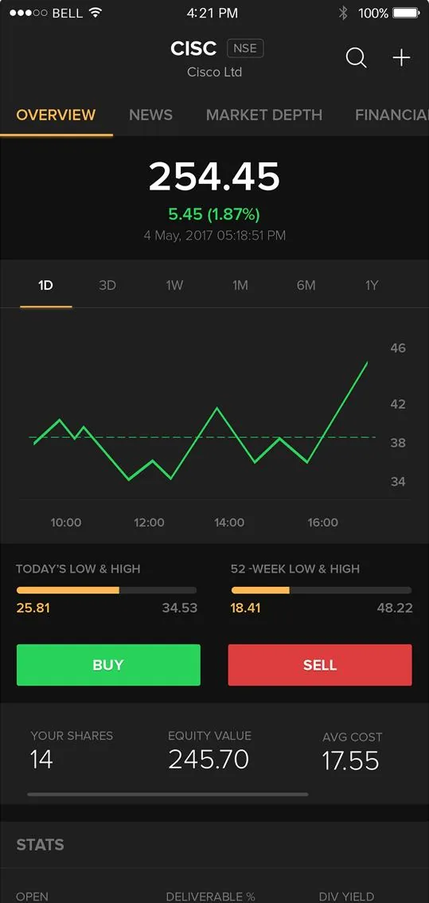
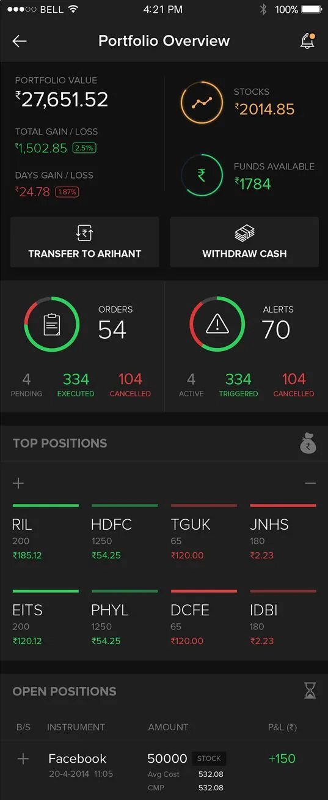
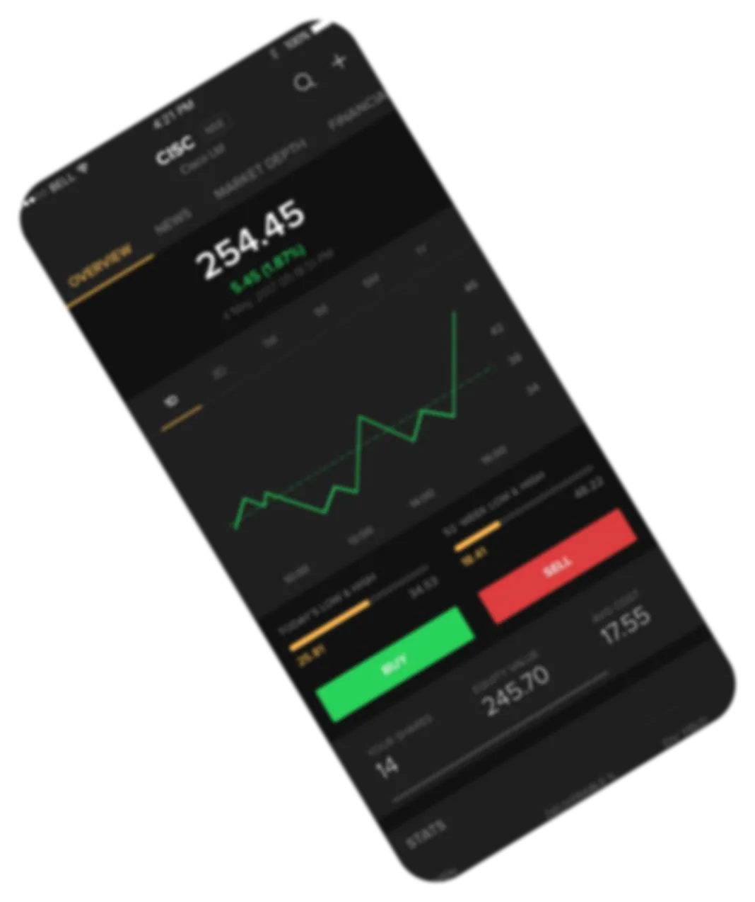

FINTECH PRODUCT UX CASE STUDY
T
TradeUp
Stock Trading App
Mobile trading UX built for clarity, confidence, and faster decisions
TradeUp was designed to make stock trading feel easier to understand for newer investors while keeping speed and control intact for active traders.
- Fintech Product
- Mobile UX
- High-Stakes Flows

TradeUp Mobile
Project Overview
A fintech product story framed around trust, speed, and decision-heavy mobile UX
TradeUp needed to feel approachable for first-time investors while still supporting repeat trading behavior, portfolio monitoring, and time-sensitive execution on mobile.
TradeUp
A stock trading app built around onboarding, portfolio review, and trade execution.
Fintech Mobile Product
Designed for users making high-trust financial decisions on a mobile interface.
Retail Investors
From newer investors seeking confidence to active traders needing speed and control.
Complexity without confidence
Trading flows felt dense, intimidating, and too easy to misread during critical actions.
UX Designer
I handled research synthesis, journey flows, wireframes, UI direction, and UAT support.
Clearer, faster product journeys
More approachable onboarding, stronger portfolio visibility, and better trade confidence.
The Product Problem
Trading products need speed, but users also need confidence before they act
In stock trading, friction is costly and ambiguity is risky. The product challenge was not just visual cleanup. It was about helping users understand what they were seeing, act quickly, and trust the outcome of each trade.
Where the experience was breaking down
New users were overwhelmed by financial terminology, active traders wanted faster execution, and portfolio screens surfaced too much data without enough hierarchy. TradeUp needed a more deliberate flow from first use to confident action.
The redesign focused on reducing hesitation during high-pressure moments without stripping away the depth serious traders expected.
Onboarding felt heavy
New investors needed clearer guidance instead of long, intimidating setup flows.
Key data lacked hierarchy
Portfolio and quote screens made it hard to identify what mattered most in the moment.
Trade execution created hesitation
Users needed stronger feedback and clearer confirmation before placing an order.
Speed and trust were competing
The product had to reduce taps while still feeling controlled and reliable.
User Insights
What research revealed about trading behavior on mobile
Interview themes, contextual inquiry, and behavior patterns pointed to a clear UX opportunity: make important actions feel simpler without removing the analytical depth that users rely on.
New users needed confidence cues
First trades triggered anxiety unless the app made actions, values, and confirmation states explicit.
Active traders optimized for speed
Frequent users wanted fewer taps, faster access to charts, and clearer trade setup pathways.
Portfolio screens needed prioritization
Users needed high-signal metrics first, with deeper data available but not overwhelming.
"I want to feel in control, but not overwhelmed when the market is moving."
Role & Process
My contribution covered the core UX path from problem framing to production readiness
I worked across research synthesis, journey definition, wireframes, UI direction, and validation support so the product could move from insight to implementation with clarity.
Research, flows, UI, and UAT
I translated user findings into experience principles, simplified flow logic, and designed production-facing screens for the most important journeys.
Reduce hesitation during high-stakes actions
The work centered on improving onboarding clarity, portfolio readability, and the trade execution path without removing advanced capabilities.
Research & synthesis
Mapped core user needs, pain points, and decision behaviors across investor types.
Flows & structure
Reworked onboarding, quote, portfolio, and trade flows to make progression clearer.
High-fidelity direction
Designed screens that balanced trust, data visibility, and action readiness.
Validation & handoff
Supported UAT and refinement so the experience held up closer to implementation.
Solution Direction
Designing a trading experience that felt faster without feeling riskier
The solution focused on reducing cognitive load at key moments: getting started, reviewing portfolio health, reading quote data, and confirming a trade with confidence.
Core design decisions
Instead of adding more features, the product direction emphasized better information hierarchy, clearer action states, and more direct paths to the tasks users repeated most.
Streamlined onboarding
Made setup feel less intimidating for newer investors entering the product for the first time.
Stronger quote readability
Focused the quote screen on price context, chart visibility, and immediate action readiness.
Portfolio-first hierarchy
Surfaced account value, gain/loss cues, and holdings in a more scannable structure.
Clearer trade confirmation
Reduced hesitation by making final action states easier to read and trust.
Final Outcome
Key screens that demonstrate the product direction
The final UI focused on making core actions readable and repeatable: checking quotes, reviewing portfolio performance, and executing trades with less friction.



Information first, action second
Users could understand price movement, chart context, and next action faster without extra scanning.
Performance became easier to read
The interface reduced clutter and made portfolio state more legible for everyday monitoring.
Execution felt more deliberate
Trade confirmation states were clearer, reducing last-step hesitation in decision-heavy moments.
Impact & Signals
What made this product work valuable from a hiring perspective
TradeUp shows my ability to handle high-trust product UX where business stakes, information complexity, and usability all matter at once.
Downloads
Strong product reach on a trading app where experience quality affects trust and retention.
App rating
A meaningful quality signal for a fintech product where user confidence is critical.
Brokerages
The product was adopted across a broad operational footprint, not just a concept exercise.
Fintech trust matters
Users evaluate not just speed, but whether the interface makes them feel safe enough to act.
Hierarchy drives confidence
When data-heavy screens are organized well, the product feels more understandable and more usable.
Better UX reduces friction at the business layer
Clearer flows directly support onboarding completion, trade execution, and repeat product use.
Reflections
What this case study demonstrates about my product design approach
I design for complexity, not just interface polish
TradeUp required balancing speed, trust, data density, and action clarity inside a product where users make meaningful financial decisions.
I can work from research through production-facing output
The project covered research, journeys, wireframes, UI direction, and validation, which is the kind of end-to-end responsibility expected in strong product teams.
I bring product judgment to high-stakes flows
My focus was not just making the app look cleaner. It was making critical moments easier to understand and act on with confidence.
Contact
Hiring for fintech, SaaS, or workflow-heavy product design?
I design product experiences that help users move through complex decisions with more clarity, confidence, and speed.